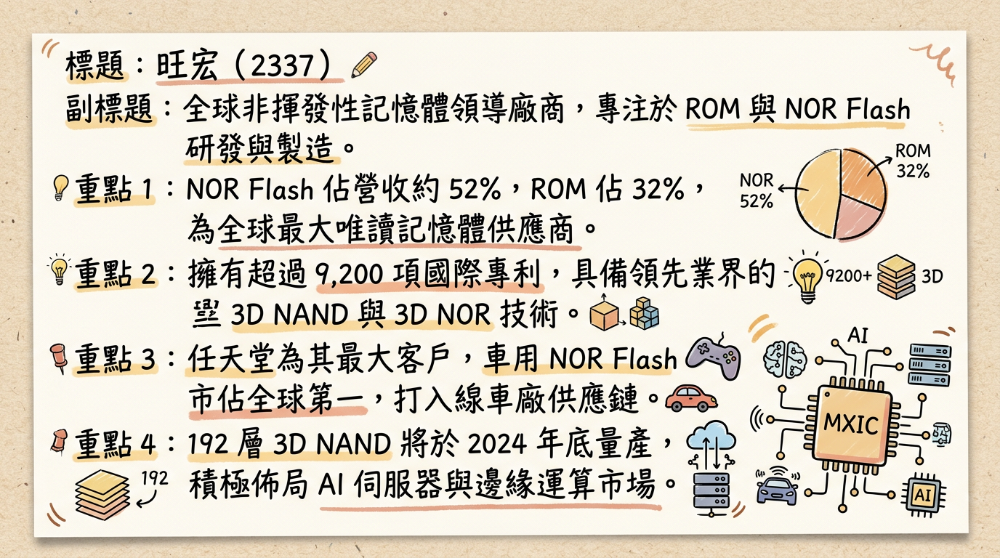
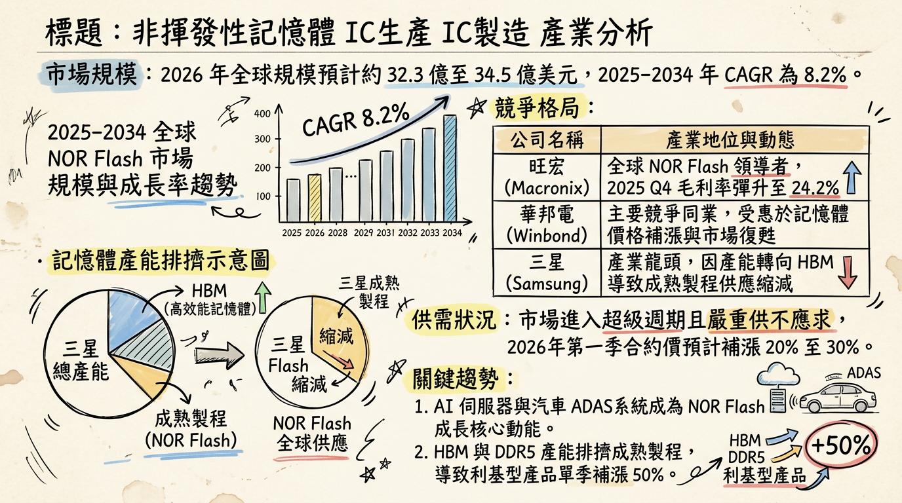
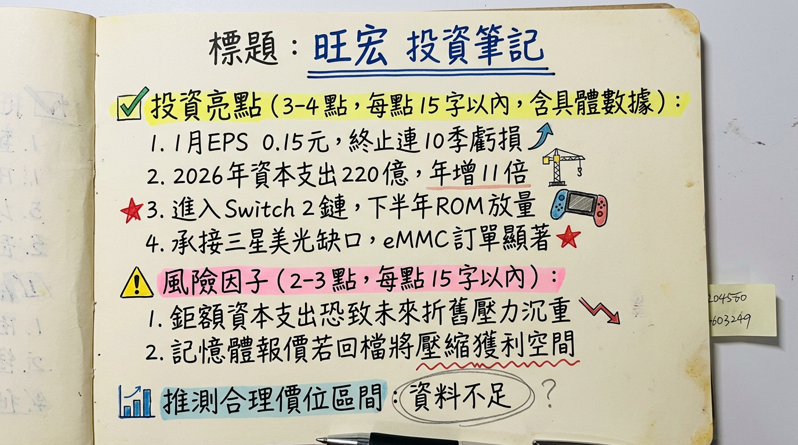

旺宏 (2337) 憑藉「最後贏家」地位接收三星退出之 MLC 市場，疊加 AI 伺服器與 Switch 2 雙引擎動能，2026 年營運將迎來 V 型反轉並挑戰 EPS 4.9 元之高成長。
旺宏電子為全球非揮發性記憶體（Non-Volatile Memory, NVM）領導廠商，主要產品包括 NOR Flash、NAND Flash 與 ROM。公司擁有 8 吋與 12 吋晶圓廠，為目前市場少數具備從研發到製造垂直整合能力的 IDM 廠。
| 產品線 | 營收佔比 | 應用領域 |
|---|---|---|
| NOR Flash | 61% | AI 伺服器、HPC、車用電子、工業控制 |
| NAND / eMMC | 約 15-20% | 工控、醫療、三星退出後之轉單市場 |
| ROM | 約 15-20% | 任天堂 (Nintendo) 遊戲機專用存儲 |
| 其他/代工 | <5% | 晶圓代工與特殊應用 |
| 月份 | 金額 (億元 TWD) | 月增率 (MoM) | 年增率 (YoY) | 備註 |
|---|---|---|---|---|
| 2026/01 | 30.17 | +14.6% | +51.4% | 創 39 個月新高 |
| 2025/12 | 26.32 | +7.7% | +44.9% | |
| 2025/11 | 24.44 | -8.0% | +25.0% | |
| 2025/10 | 26.52 | -9.0% | +24.0% | |
| 2025/09 | 29.03 | +14.0% | +9.0% | |
| 2025/08 | 25.57 | -7.0% | -5.0% |
* 2026 年 Flash 總產出量 (Wafer) 預計較 2025 年 成長一倍。
* 2026 Q1 合約價持續看漲，eMMC 部分規格漲幅預期達 30-50%。
* 管理層表示 2026-2027 年將進入營收與獲利的快速擴張期。
| 券商名稱 | 目標價 | 評等 | 日期 | 核心理由 |
|---|---|---|---|---|
| JPMorgan | 100 元 | 買進 (Buy) | 2026/01/28 | 搶佔三星退出後之 MLC 缺口 |
| Morgan Stanley | 93 元 | 加碼 (OW) | 2026/01/26 | 記憶體循環復甦，產能轉向 HBM 導致 NOR 供給受限 |
| FactSet 共識 | 110.5 元 | 強力買進 | 2026/02/26 | 目標價中位數持續上修，最高看 149 元 |
| 本土投顧 | 83.8 元 | 買進 | 2026/01/28 | 1 月自結 EPS 0.15 元優於預期 |
| 季度 | 毛利率 (%) | 營業利益率 (%) | 單季 EPS (元) |
|---|---|---|---|
| 2025 Q4 | 24.2% | -5.1% | -0.16 |
| 2025 Q3 | 13.5% | -13.9% | -0.47 |
| 2025 Q2 | 15.6% | -15.9% | -0.48 |
| 2025 Q1 | 17.3% | -18.0% | -0.58 |
| 公司名稱 | 市佔排名 | 技術優勢 | 2026/01 營收表現 |
|---|---|---|---|
| 旺宏 (2337) | 1 (高密度) | 45/55nm、MLC 領先 | 30.17 億 (YoY +51.4%) |
| 華邦電 (2344) | 2 (中低密度) | DRAM+NOR 整合 | 117.78 億 (YoY +94%) |
| 兆易創新 | 3 | 低成本消費性 | 未公開（中國市場為主） |
| 英飛凌 | 4 | 車用/工業強項 | 穩定成長 |
2. 漲價效應：2026 Q1 eMMC 合約價傳出調漲 30-50%。
3. 訂單轉向：三星正式終止特定 MLC 產線，客戶轉單至旺宏。
4. 任天堂效應：Switch 2 供應鏈拉貨動能將於 2Q26 啟動。
2. 折舊成本：220 億資本支出將於 2026 下半年開始反映於折舊。
2. 產能擴充：220 億元投資將於年底兌現。
3. AI 滲透：AI 伺服器對高密度 NOR 需求缺口約 8%。
2. 關稅風險：需注意美國對半導體進口關稅之政策變動。
* 短線觀察點：85 - 95 元（外資共識下緣）。
* 中長線目標：100 - 110 元（基於 2026 年預估 EPS 4.9 元給予 20-22 倍 P/E）。
* 操作策略：近期若隨大盤拉回皆為買點，建議分批佈局以迎接 2026 下半年產能與獲利之爆發。
本報告由 AI 自動產生，資料來源為公開網路資訊，僅供參考，不構成投資建議。
產生時間：2026-03-01 02:32


